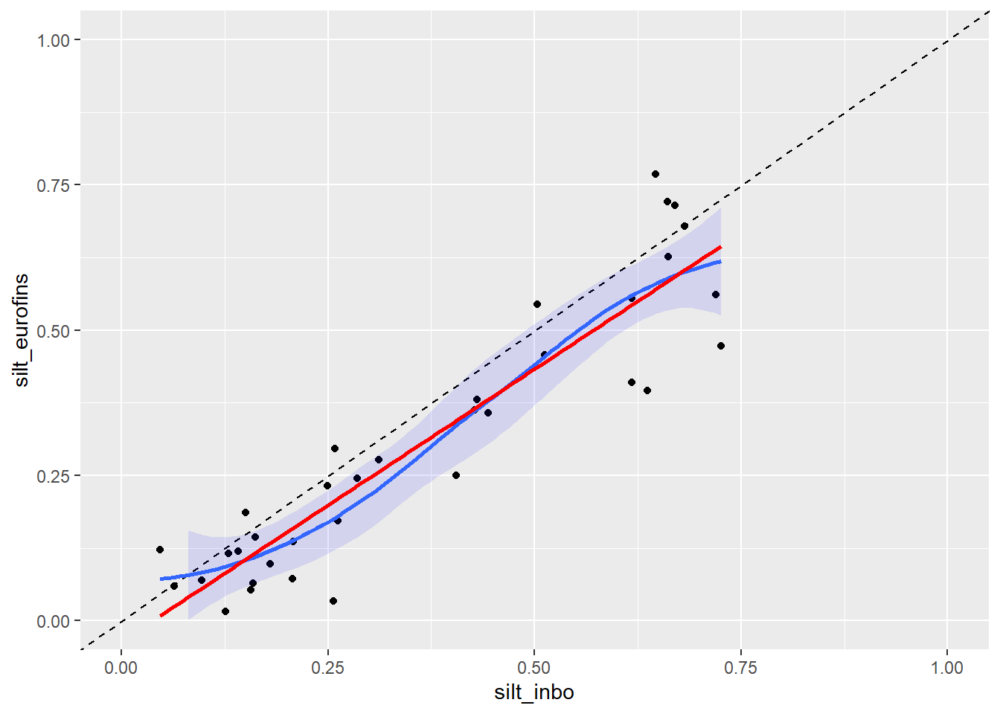
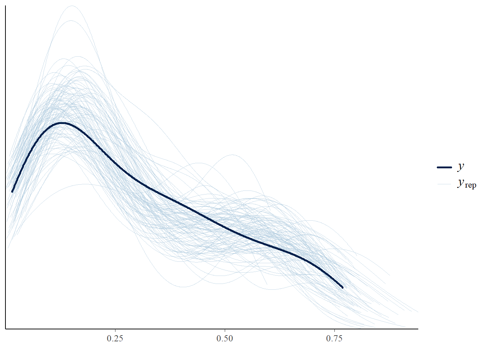
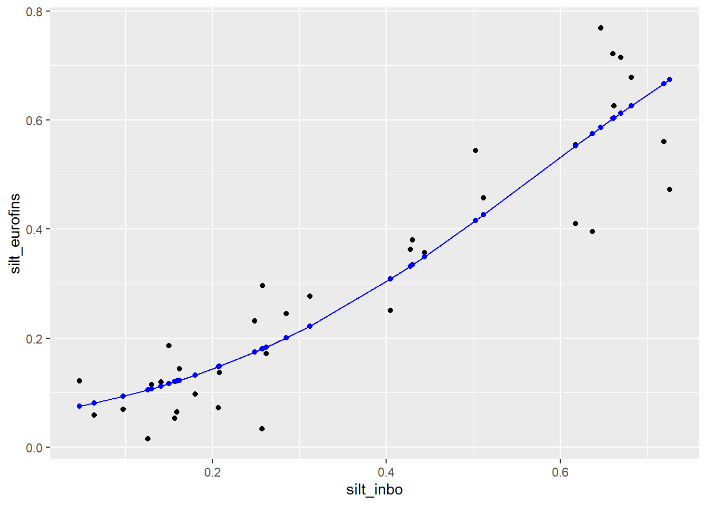
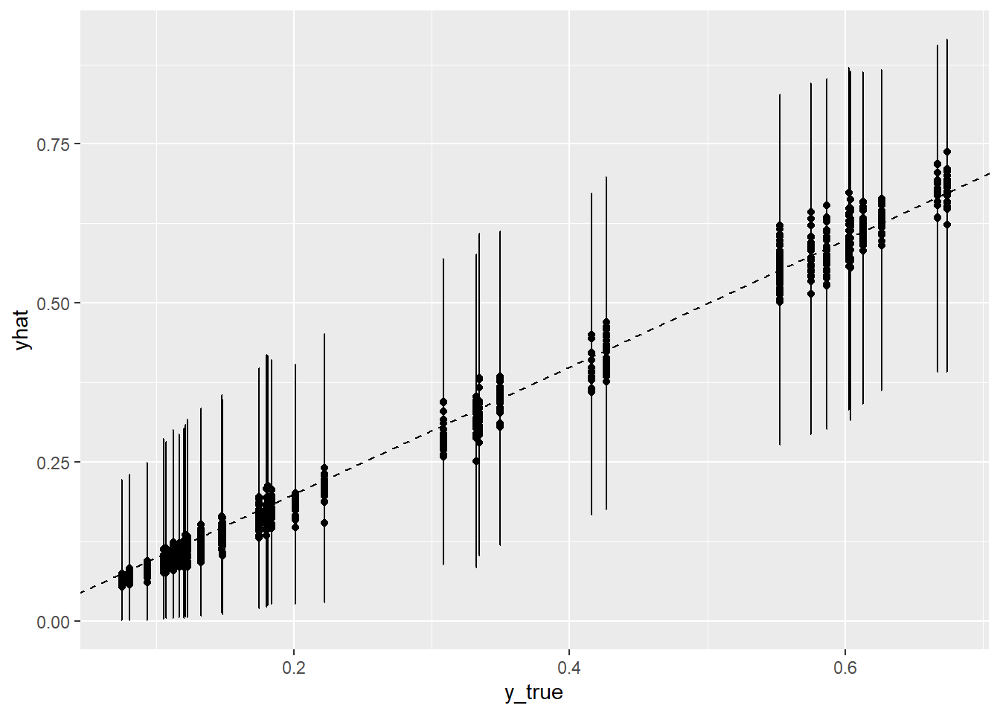

# methods used by Eurofins and national labs
methods_used <- read_excel(
here("data", "Eurofins_comparison",
"Results_and_Standards_EUROFINS_N_SIMS.xlsx"),
sheet = "Standards_EUROFINS_and_N_SIMS"
)
source(here("source", "Eurofins", "import-clean-Eurofins.R"))
source(here("source", "Eurofins", "import-clean-Eurofins-Flanders.R"))
source(here("source", "Eurofins", "import-clean-Eurofins-Wallonia.R"))Exploratory analysis Eurofins data
Data import & cleaning
For now, I focused only on the central Eurofins and Flemish data to get a better grip on the structure of the data. These datasets are not in a common format, all countries have different variables, different variable names, different units per variable, … Writing ad-hoc scripts per country will take some time.
Let’s look at 1 variable: silt. It’s a variable that is bounded between 0 and 1 (granulometric fraction).

Using Eurofins & NSIMS data to design the simulation experiment
In the complete simulation experiment we can simulate ad libitum the latent variables and add noise to them. However, we can design also another simulation study where we use the Eurofins/NSIMS data that mimics more closely the data we will see in real life. This should give better insights.
We could work as follows:
- Per soil variable, identify countries with different method than Eurofins.
- Identify which method is the reference method (see SML); let’s suppose that
silt_inbois the non-reference method (\(X\)) andsilt_eurofinsis the reference method (\(Y\)) and we want to validate a TF \(X \rightarrow Y\). - Let’s assume the dataset contains the true latent \(X\) of a site and we will then simulate some measurement error on top of that. We specify the SD of the measurement error as a proportion of the SD of the latent \(X\) (as in the other simulation study).
# sd of latent x
sigma_x <- sd(data_silt$silt_inbo)
# sd of measurement error: specify as a proportion of the structural sigma_x
# choices: 0.05, 0.1, 0.2
sigma_mex <- sigma_x * 0.1- To get a value for the latent \(Y\), we fit a Bayesian model and take the fitted value as the latent parameter. For bounded variables like granulometric fractions, a natural choice is a Beta-model (priors need to be discussed):
\[ \begin{eqnarray} y_i \sim& Beta(\mu_i, \phi) \\ log\left(\frac{\mu_i}{1 - \mu_i}\right) =& \beta_0 + \beta_1x_i \\ \mathrm{log}(\phi) =& \alpha \\ \beta_0 \sim& N(0, 10) \\ \beta_1 \sim& N(0, 10) \\ \alpha \sim& \mathrm{Gamma}(.01,\ .01) \end{eqnarray} \]
pr <- c(
prior("normal(0, 10)", class = "b"),
prior("normal(0, 10)", class = "Intercept"),
prior("gamma(0.01, 0.01)", class = "phi")
)
mod <- brm(
silt_eurofins ~ silt_inbo,
family = Beta("logit","log"),
prior = pr,
silent = 2, refresh = 0,
data = data_silt
)WARNING: Rtools is required to build R packages, but is not currently installed.
Please download and install the appropriate version of Rtools for 4.6.0 from
https://cran.r-project.org/bin/windows/Rtools/.Trying to compile a simple C fileRunning "C:/R/R-4.6.0/bin/x64/Rcmd.exe" SHLIB foo.c
using C compiler: 'gcc.exe (GCC) 14.2.0'
gcc -I"C:/R/R-4.6.0/include" -DNDEBUG -I"C:/R/library/Rcpp/include/" -I"C:/R/library/RcppEigen/include/" -I"C:/R/library/RcppEigen/include/unsupported" -I"C:/R/library/BH/include" -I"C:/R/library/StanHeaders/include/src/" -I"C:/R/library/StanHeaders/include/" -I"C:/R/library/RcppParallel/include/" -DRCPP_PARALLEL_USE_TBB=1 -I"C:/R/library/rstan/include" -DEIGEN_NO_DEBUG -DBOOST_DISABLE_ASSERTS -DBOOST_PENDING_INTEGER_LOG2_HPP -DSTAN_THREADS -DUSE_STANC3 -DSTRICT_R_HEADERS -DBOOST_PHOENIX_NO_VARIADIC_EXPRESSION -D_HAS_AUTO_PTR_ETC=0 -include "C:/R/library/StanHeaders/include/stan/math/prim/fun/Eigen.hpp" -std=c++1y -I"C:/rtools45/x86_64-w64-mingw32.static.posix/include" -O2 -Wall -std=gnu2x -mfpmath=sse -msse2 -mstackrealign -c foo.c -o foo.o
cc1.exe: warning: command-line option '-std=c++14' is valid for C++/ObjC++ but not for C
In file included from C:/R/library/RcppEigen/include/Eigen/Core:19,
from C:/R/library/RcppEigen/include/Eigen/Dense:1,
from C:/R/library/StanHeaders/include/stan/math/prim/fun/Eigen.hpp:22,
from <command-line>:
C:/R/library/RcppEigen/include/Eigen/src/Core/util/Macros.h:679:10: fatal error: cmath: No such file or directory
679 | #include <cmath>
| ^~~~~~~
compilation terminated.
make: *** [C:/R/R-4.6.0/etc/x64/Makeconf:297: foo.o] Error 1WARNING: Rtools is required to build R packages, but is not currently installed.
Please download and install the appropriate version of Rtools for 4.6.0 from
https://cran.r-project.org/bin/windows/Rtools/.#### How do I get rid of the warning on RTools when rendering? I don't get any warnings in Rstudio, only when rendering to html, warning=F is already in the chunk header. R 4.6 uses Rtools45 (https://cran.r-project.org/bin/windows/base/howto-R-4.6.html) which is installed on my pc so I don't understand the error.
summary(mod) Family: beta
Links: mu = logit
Formula: silt_eurofins ~ silt_inbo
Data: data_silt (Number of observations: 35)
Draws: 4 chains, each with iter = 2000; warmup = 1000; thin = 1;
total post-warmup draws = 4000
Regression Coefficients:
Estimate Est.Error l-95% CI u-95% CI Rhat Bulk_ESS Tail_ESS
Intercept -2.75 0.21 -3.18 -2.33 1.00 2381 2188
silt_inbo 4.80 0.44 3.92 5.68 1.00 2788 2435
Further Distributional Parameters:
Estimate Est.Error l-95% CI u-95% CI Rhat Bulk_ESS Tail_ESS
phi 19.58 4.70 11.63 29.71 1.00 2842 2596
Draws were sampled using sampling(NUTS). For each parameter, Bulk_ESS
and Tail_ESS are effective sample size measures, and Rhat is the potential
scale reduction factor on split chains (at convergence, Rhat = 1).pp_check(mod, trim = T, ndraws = 100)
We can construct the latent \(Y\) then as follows:
- black = observed Eurofins-silt vs. “latent” INBO silt
- blue = “latent” Eurofins-silt vs. “latent” INBO silt
data_silt <- data_silt %>%
mutate(
silt_eurofins_latent = apply(posterior_epred(mod), 2, mean),
)
ggplot(data_silt) +
geom_point(aes(silt_inbo, silt_eurofins), color = "black") +
geom_point(aes(silt_inbo, silt_eurofins_latent), color = "blue") +
geom_line(aes(silt_inbo, silt_eurofins_latent), color = "blue")
- We can now create two simulated datasets that mimic the original one. The first dataset has the same number of rows as the original dataset and will be used to train a model on data containing measurement error. The second independent dataset will be used to validate the predictions from the model (N = 1000).
# training data
data_sims1 <- data.frame(
x_obs = data_silt$silt_inbo + rnorm(nrow(data_silt), 0, sigma_mex),
y_obs = posterior_predict(mod, ndraws = 1)[1,]
)
mod2 <- brm(
y_obs ~ x_obs,
family = Beta("logit","log"),
prior = pr,
silent = 2, refresh = 0,
data = data_sims1
)WARNING: Rtools is required to build R packages, but is not currently installed.
Please download and install the appropriate version of Rtools for 4.6.0 from
https://cran.r-project.org/bin/windows/Rtools/.Trying to compile a simple C fileRunning "C:/R/R-4.6.0/bin/x64/Rcmd.exe" SHLIB foo.c
using C compiler: 'gcc.exe (GCC) 14.2.0'
gcc -I"C:/R/R-4.6.0/include" -DNDEBUG -I"C:/R/library/Rcpp/include/" -I"C:/R/library/RcppEigen/include/" -I"C:/R/library/RcppEigen/include/unsupported" -I"C:/R/library/BH/include" -I"C:/R/library/StanHeaders/include/src/" -I"C:/R/library/StanHeaders/include/" -I"C:/R/library/RcppParallel/include/" -DRCPP_PARALLEL_USE_TBB=1 -I"C:/R/library/rstan/include" -DEIGEN_NO_DEBUG -DBOOST_DISABLE_ASSERTS -DBOOST_PENDING_INTEGER_LOG2_HPP -DSTAN_THREADS -DUSE_STANC3 -DSTRICT_R_HEADERS -DBOOST_PHOENIX_NO_VARIADIC_EXPRESSION -D_HAS_AUTO_PTR_ETC=0 -include "C:/R/library/StanHeaders/include/stan/math/prim/fun/Eigen.hpp" -std=c++1y -I"C:/rtools45/x86_64-w64-mingw32.static.posix/include" -O2 -Wall -std=gnu2x -mfpmath=sse -msse2 -mstackrealign -c foo.c -o foo.o
cc1.exe: warning: command-line option '-std=c++14' is valid for C++/ObjC++ but not for C
In file included from C:/R/library/RcppEigen/include/Eigen/Core:19,
from C:/R/library/RcppEigen/include/Eigen/Dense:1,
from C:/R/library/StanHeaders/include/stan/math/prim/fun/Eigen.hpp:22,
from <command-line>:
C:/R/library/RcppEigen/include/Eigen/src/Core/util/Macros.h:679:10: fatal error: cmath: No such file or directory
679 | #include <cmath>
| ^~~~~~~
compilation terminated.
make: *** [C:/R/R-4.6.0/etc/x64/Makeconf:297: foo.o] Error 1WARNING: Rtools is required to build R packages, but is not currently installed.
Please download and install the appropriate version of Rtools for 4.6.0 from
https://cran.r-project.org/bin/windows/Rtools/.summary(mod2) Family: beta
Links: mu = logit
Formula: y_obs ~ x_obs
Data: data_sims1 (Number of observations: 35)
Draws: 4 chains, each with iter = 2000; warmup = 1000; thin = 1;
total post-warmup draws = 4000
Regression Coefficients:
Estimate Est.Error l-95% CI u-95% CI Rhat Bulk_ESS Tail_ESS
Intercept -2.92 0.24 -3.39 -2.45 1.00 2457 2774
x_obs 5.08 0.50 4.09 6.04 1.00 2854 2758
Further Distributional Parameters:
Estimate Est.Error l-95% CI u-95% CI Rhat Bulk_ESS Tail_ESS
phi 14.14 3.42 8.27 21.65 1.00 2447 2804
Draws were sampled using sampling(NUTS). For each parameter, Bulk_ESS
and Tail_ESS are effective sample size measures, and Rhat is the potential
scale reduction factor on split chains (at convergence, Rhat = 1).# testing data
N <- 1000
tmp <- data.frame(
silt_inbo = sample(data_silt$silt_inbo, N, replace = T)
)
data_sims2 <- data.frame(
x_true = tmp$silt_inbo,
y_true = apply(posterior_epred(mod, newdata = tmp), 2, mean),
x_obs = tmp$silt_inbo + rnorm(N, 0, sigma_mex)
)
# predictions:
yhat <- apply(posterior_epred(mod2, newdata = data_sims2), 2, mean)
yhatI <- predictive_interval(mod2, newdata = data_sims2, prob = .90)
data_sims2 <- data_sims2 %>%
mutate(
yhat = yhat,
yhat_ll = yhatI[,1],
yhat_ul = yhatI[,2]
)
# summarise predictions: mean absolute error & prediction interval coverage
data_sims2 %>%
summarise(
MAE = mean(abs(yhat - y_true)),
PICP = mean(between(y_true, yhat_ll, yhat_ul))
) MAE PICP
1 0.0183772 1ggplot(data_sims2, aes(y_true, yhat, ymin = yhat_ll, ymax = yhat_ul)) +
geom_point() +
geom_errorbar() +
geom_abline(slope = 1, intercept = 0, lty = 2)
The MAE is reasonably low I think. However, the prediction intervals are not well calibrated, they are overly conservative. We asked for a 90% prediction interval, but the PICP was 100%. We’re seeing the same conservative behavior in the simulation experiment that is not based on real data. Of course in this example the Beta-regression was done on only 35 observations; reducing the uncertainty in the parameter estimates through more observation will probably reduce the prediction uncertainty.